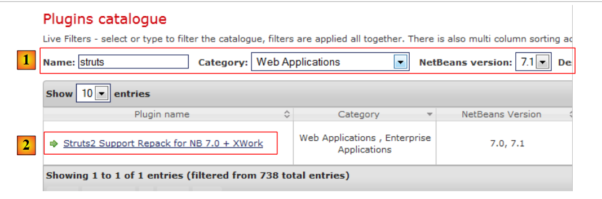

1. Introdução
O PDF do documento está disponível |AQUI|.
Os exemplos do documento estão disponíveis |AQUI|.
Propomos aqui apresentar, por meio de exemplos, os conceitos importantes do Struts 2. O Struts 2 é um framework web que fornece:
- uma série de bibliotecas na forma de arquivos JAR
- um ambiente de desenvolvimento: o Struts 2 influencia a maneira como se desenvolve uma aplicação web.
Os pré-requisitos necessários para a compreensão dos exemplos são os seguintes:
- conhecimentos básicos da linguagem Java
- conhecimentos básicos de desenvolvimento web, especialmente da linguagem HTML.
No site [http://developpez.com], você encontrará todos os recursos necessários para esses pré-requisitos. Eu escrevi alguns deles, que podem ser encontrados no site [https://stahe.github.io].
Os exemplos deste documento estão disponíveis nos sites URL e [AQUI].
Para se aprofundar no Struts 2, pode-se utilizar as seguintes referências:
- [ref1]: a documentação do Struts 2, disponível no site do Struts
- [ref2]: o livro “Struts 2 in Action”, escrito por Donald Brown, Chad Michael Davis e Scott Stanlick, publicado pela editora Manning. Este livro é particularmente didático.
Às vezes, faremos referência a [ref2] para indicar ao leitor que ele pode aprofundar-se em um determinado assunto com esse livro.
O documento foi escrito de forma a poder ser lido sem a necessidade de um computador à mão. Por isso, incluímos muitas capturas de tela.
1.1. O papel do Struts 2 em uma aplicação web
Primeiramente, vamos situar o Struts 2 no desenvolvimento de uma aplicação web. Na maioria das vezes, ela será construída sobre uma arquitetura multicamadas como a seguinte:
 |
- a camada [web] é a camada em contato com o usuário da aplicação web. O usuário interage com a aplicação web por meio de páginas da web visualizadas por um navegador. É nessa camada que se situa o Struts 2 e exclusivamente nessa camada.
- A camada [metier] implementa as regras de gestão da aplicação, como o cálculo de um salário ou de uma fatura. Essa camada utiliza dados provenientes do usuário por meio da camada [web] e do SGBD por meio da camada [dao].
- A camada [dao] (Data Access Objects), a camada [jpa] (Java Persistence API) e o driver JDBC gerenciam o acesso aos dados do SGBD. A camada [jpa] atua como ORM (Mapeador Objeto-Relacional). Ela faz a ponte entre os objetos manipulados pela camada [dao] e as linhas e colunas dos dados de um banco de dados relacional.
- A integração das camadas pode ser realizada por um contêiner Spring ou EJB3 (Enterprise Java Bean).
A maioria dos exemplos apresentados a seguir utilizará apenas uma camada, a camada [web]:
 |
No entanto, este documento será concluído com a construção de uma aplicação web multicamadas:
 |
O conjunto das camadas [metier], [dao] e [jpa/hibernate] nos será fornecido na forma de um arquivo JAR, de modo que, mais uma vez, teremos apenas a camada [web] para construir.
1.2. O modelo de desenvolvimento MVC do Struts 2
O Struts 2 implementa o modelo de arquitetura conhecido como MVC (Modelo – Visão – Controlador) da seguinte maneira:
 |
O processamento de uma solicitação de um cliente ocorre da seguinte maneira:
Os URL solicitados têm o formato http://machine:port/contexte/rep1/rep2/.../Action.. O caminho [/rep1/rep2/.../Action] deve corresponder a uma ação definida em um arquivo de configuração do Struts 2; caso contrário, ele será rejeitado. Uma ação é definida em um arquivo XML no seguinte formato:
No exemplo anterior, suponhamos que seja solicitada a ação URL [ http://machine:port/contexte/actions/Action1]. As etapas a seguir são então executadas:
-
solicitação — o navegador do cliente faz uma solicitação ao controlador [FilterDispatcher]. Este processa todas as solicitações dos clientes. É a porta de entrada da aplicação. É o C de MVC.
-
Processamento
- o controlador C consulta seu arquivo de configuração e descobre que a ação actions/Action1 existe. O namespace (linha 1), concatenado com o nome da ação (atributo name da linha 2), define a ação actions/Action1.
- O controlador C instancia [2a], uma classe do tipo [actions.Action1] (atributo class da linha 2). O nome e o pacote dessa classe podem ser quaisquer.
- Se a URL solicitada for acompanhada de parâmetros do tipo [param1=val1¶m2=val2&...], então o controlador C atribui esses parâmetros à classe [actions.Action1] da seguinte maneira:
Portanto, é necessário que a classe [actions.Action1] possua esses métodos setParami para cada um dos parâmetros parami esperados.
- (continuação)
- o controlador C solicita que o método de assinatura [String execute()] da classe [actions.Action1] seja executado. Este método pode, então, utilizar os parâmetros parami que a classe recuperou. No processamento da solicitação do usuário, ela pode precisar das camadas [metier] e [2b]. Uma vez processada a solicitação do cliente, ela pode gerar diversas respostas. Um exemplo clássico é:
- uma página de erros, caso a solicitação não tenha sido processada corretamente
- uma página de confirmação, caso contrário
- o controlador C solicita que o método de assinatura [String execute()] da classe [actions.Action1] seja executado. Este método pode, então, utilizar os parâmetros parami que a classe recuperou. No processamento da solicitação do usuário, ela pode precisar das camadas [metier] e [2b]. Uma vez processada a solicitação do cliente, ela pode gerar diversas respostas. Um exemplo clássico é:
O método execute retorna ao controlador C um resultado do tipo cadeia de caracteres, chamado de chave de navegação. No exemplo acima, [actions.Action1].execute pode gerar duas chaves de navegação: “page1” (linha 3) e “page2” (linha 4). O método [actions.Action1].execute também atualizará o modelo M [2c], que será utilizado pela página JSP, a ser enviada como resposta ao usuário. Esse modelo pode conter elementos de:
- (continuação)
- da classe [actions.Action1] instanciada
- a sessão do usuário
- dados do escopo Application
- …
- resposta — o controlador C solicita que a página JSP, correspondente à chave de navegação [3], seja exibida. Essa é a vista, o V de MVC. A página JSP utiliza um modelo M para inicializar as partes dinâmicas da resposta que deve enviar ao cliente.
Agora, vamos esclarecer a relação entre a arquitetura web MVC e a arquitetura em camadas. Na verdade, trata-se de dois conceitos diferentes que, às vezes, são confundidos. Consideremos uma aplicação web Struts 2 de camada única:
 |
Se implementarmos a camada [web] com o Struts 2, teremos, de fato, uma arquitetura web MVC, mas não uma arquitetura multicamadas. Nesse caso, a camada [web] cuidará de tudo: apresentação, lógica de negócios e acesso aos dados. Com o Struts 2, serão as classes do tipo [Action] que realizarão esse trabalho.
Agora, vamos considerar uma arquitetura web multicamadas:
 |
A camada [web] pode ser implementada sem framework e sem seguir o modelo MVC. Temos, portanto, uma arquitetura multicamadas, mas a camada web não implementa o modelo MVC.
Em MVC, mencionamos que o modelo M era o da vista V, c.a.d, ou seja, o conjunto de dados exibidos pela vista V. Às vezes (frequentemente), é fornecida outra definição do modelo M de MVC:
 |
Muitos autores consideram que o que está à direita da camada [web] forma o modelo M do MVC. Para evitar ambiguidades, pode-se referir-se:
- do modelo do domínio ao se referir a tudo o que está à direita da camada [présentation]
- do modelo da vista, quando se se refere aos dados exibidos por uma vista V
Daqui em diante, o termo “modelo M” se referirá exclusivamente ao modelo de uma vista V.
1.3. As ferramentas utilizadas
Daqui em diante, utilizaremos (dezembro de 2011)
- o NetBeans 7.01, disponível em URL [http://www.netbeans.org]
- o plugin Struts 2 para o NetBeans 7.01, disponível em URL [http://plugins.netbeans.org/plugin/39218]
- a versão 2.2.3 do Struts 2 está disponível em URL [http://struts.apache.org/]
Observe-se que apenas as bibliotecas do Struts 2 obtidas nos links URL e [http://struts.apache.org/] são indispensáveis para desenvolver os exemplos a seguir. O NetBeans pode ser substituído por outro IDE (Eclipse, JDeveloper, IntelliJ, etc.), e o plugin do Struts 2 serve apenas para facilitar o trabalho do desenvolvedor. Ele também não é indispensável.
1.3.1. IDE NetBeans
No site de downloads do NetBeans, escolhemos a versão Java EE:

1.3.2. Plug-in Struts 2
Dependendo das versões do NetBeans, esse plugin nem sempre esteve disponível. Em dezembro de 2011, ele pode ser encontrado em URL [http://plugins.netbeans.org]. Este URL permite conhecer os diferentes plugins disponíveis para o NetBeans. É possível filtrar a pesquisa. No [1], podemos selecionar os plug-ins que contêm a palavra “struts” no nome.
 |
- seguimos o link [2]
 |
Baixamos o plugin e o descompactamos [2]. Para integrá-lo ao NetBeans, podemos proceder da seguinte forma:
- inicie o NetBeans
 |
- no [1], selecione o menu Ferramentas/Plug-ins
- na aba [2], use o botão [3]
- em [4], selecione os arquivos .nbm dos plug-ins baixados. Aqui, escolhemos as bibliotecas do Struts versão 2.2.3 em vez das do Struts 2.0.14
- De volta à aba [2], instalamos os plug-ins selecionados com o botão [5].
A instalação dos plug-ins geralmente requer a reinicialização do NetBeans.
1.3.3. As bibliotecas do Struts 2
Se você baixou o plug-in Struts 2 para o NetBeans, terá as principais bibliotecas do Struts, mas não todas. A seguir, precisaremos de algumas bibliotecas disponíveis no site do Struts 2 [http://struts.apache.org/].
 |
Seguimos o link [1] e, em seguida, o link [2] para baixar o arquivo zip da distribuição 2.2.3.1. Depois que a distribuição for descompactada, as bibliotecas necessárias para o Struts serão encontradas na pasta [lib] [3] da distribuição. Existem dezenas delas, e surge então a dúvida sobre quais são indispensáveis. É aí que o plugin do Struts nos ajudará.